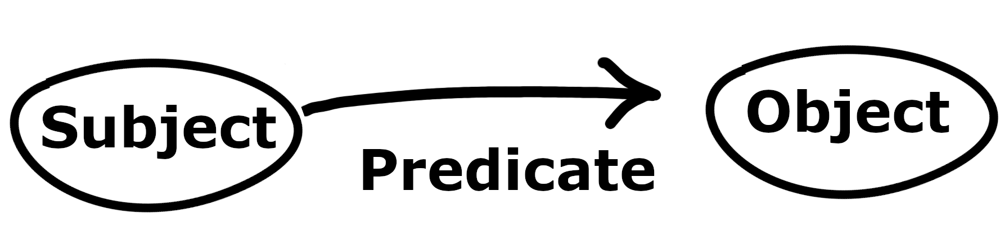
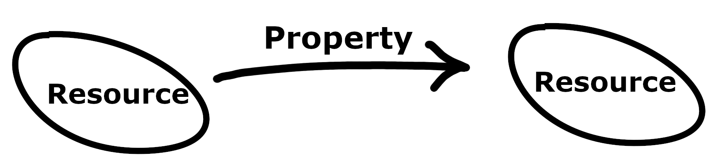
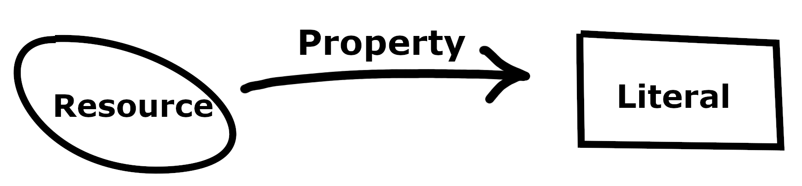

Ontology
Learning outcomes:
After completing this lesson you should be able to:
- Understand what is meant by an ontology.
- Find examples of ontologies, for example using the "ontology lookup service".
- Describe the difference between the "open world assumption" and the "closed world assumption" in the context of databases and ontologies.
- Write simple examples in RDF to express relationships between entities.
1.1 Basic ideas
1.1.1 What is an ontology?
Ontologies provide a way of modelling an area of interest. For example, the Pizza ontology
- which you can access as an OWL file
- or which you can read about in a helpful tutorial for Protégé
gives a way of describing pizzas and pizza toppings, as well as describing how certain types of pizza must have particular toppings. It is recommended that you read the pizza tutorial in conjunction with the material on Lesson 3 of this unit.
While pizza may be a very specific aspect of the known universe, ontologies can be much wider in scope. The top level of the SUMO ontology, as presented in (Niles and Pease, 2001) has the following structure:
- Entity
- Physical
- Object
- SelfConnectedObject
- ContinuousObject
- CorpuscularObject
- Collection
- SelfConnectedObject
- Process
- Object
- Abstract
- SetClass
- Relation
- Proposition
- Quantity
- Number
- PhysicalQuantity
- Attribute
- SetClass
- Physical
This provides one way of classifying almost everything. The idea is that any thing, or any entity, whatsoever, falls into one of the two classes consisting of physical things and of abstract things, and will then fall into some subclass.
You can read the paper by Niles and Pease to understand some of the motivation behind the development of SUMO (Suggested Upper Merged Ontology). The paper also gives some general background about the need for this type of ontology.
The top level of SUMO as described above is only part of the ontology. There you have a taxonomy. That is, a classification of things into different types of thing. Ontologies, including SUMO, provide much more than just a taxonomy.
From a computer science perspective:
-
An ontology defines a common vocabulary for people who need to share information in a domain.
-
It includes machine-interpretable definitions of basic concepts in the domain and relations among them.
Motivations to develop an ontology include the need to:
- Share common understanding of the structure of information among people or software agents.
- Make domain knowledge explicit and reusable.
- Compare domains, applications, contexts.
- Facilitate collaboration.
- Provide a model to study a domain.
An ontology includes:
- Classes (concepts, kinds, types, sorts of thing)
- Relationships (properties, roles)
- Instances (individuals)
Beware
Names are not standard. For example, description logic talks about roles rather than properties. Some properties may be called attributes.
In an ontology, as well as saying what the classes and instances and relationships are, we often:
- Say that an individual belongs to a class:
e.g. Dumbo is an Elephant. - Say that one class is a subclass of another:
e.g. An Elephant is an Animal. - Define new classes out of existing ones and relationships:
e.g. The class of Students studying more than 6 modules. - State features that relationships have:
e.g. If A is married to B then B is married to A. - Use various kinds of logic to state axioms about how the aspects of the world described by the ontology behave.
Classes and relationships are key aspects of any ontology. However, to determine appropriate classes and relationships depends on the application area and usually is hard. In the pizza ontology there is a class called AmericanaPizza. In other places this might be called an example of a type of pizza, or a kind of pizza. An example of a relationship in the pizza world could be the relationship between a pizza and a topping where that pizza has that particular topping.
In addition, ontologies generally have instances or individuals but these need not correspond to individual things in the real world.
You could have vanilla as an instance of a class Flavour, and mean that vanilla was a particular type of flavour. But you could alternatively have Vanilla as a class, where the instances in that class are different vanilla flavoured things. Being an individual in an ontology is not something inherent in the idea or thing itself – it depends on what the purpose of the ontology is.
Ontologies can be represented and manipulated using:
-
Languages such as:
- RDF (Resource Description Framework), a way of representing knowledge in triples which can form graphs or networks.
- OWL (Web Ontology Language), a more expressive language than RDF, based on description logic.
- SPARQL (SPARQL Protocol And RDF Query Language), a query language for RDF data that is similar to SQL.
-
Software such as:
- Protégé which we use in Lesson 3 of unit 4 (this unit).
1.1.2 Classes
An ontology has classes:
- Classes (also called concepts) can be seen as answers to the question what kind of a thing is this?
- Conventionally classes are singular names e.g Animal not Animals. Classes can be thought of as collections of individuals, but we stick to singular names. We think of a class Animal as consisting of animals, but the name of the class is Animal and not Animals.
- Classes define the main concepts in the domain.
1.1.2.1 Hierarchy
Classes have hierarchy.
Based on their place in the hierarchy, a class can be:
- Superclass (parent) of another class.
- Subclass (child) of another class.
Every subclass inherits the characteristics of its superclass in the domain.
Multiple inheritance is usually allowed. For example, there can be a class SeaPlane which is a subclass of both Plane and WaterBorneVehicle although neither of these two classes is a subclass of the other one.
1.1.3 Individuals
Ontologies usually have individuals also called instances. These are the specific objects we will see in our world (e.g. in a database including the data from the world). Every individual belongs to at least one class.
Individuals inherit the attributes of their class(es), and have specific values (this is what differentiates them from other individuals in the class).
What is an individual can depend on the purpose of the ontology. It is not something that is inherent in a thing on its own.
We can ask: are the following individuals?
-
The Lego model of Hogwarts?
-
The book Jane Eyre by Charlotte Bronte?
This is not entirely straightforward. These are not physical things you can point at in the world. You can point at a particular copy of a book, or a particular example of a Lego model. But when we say 'Charlotte Bronte wrote Jane Eyre' we are not talking about specific physical examples of the book but something more abstract.
A class will be a collection of some individuals, but it is possible that individuals are not physical things; maybe we can think of them as collections (e.g. copies of a book) but only in a way that we do not want to model in the particular ontology.
-
The text of a book could be an individual in one ontology belonging to a class of works by the author.
-
A different ontology might have all physical copies of the same text as individuals in one class; another ontology might have different editions as individuals.
-
You have to think very carefully about the purpose of the model (the ontology) to answer questions about what should be modelled as an individual, or as a class, or as a relationship, etc.
1.1.4 Relationships
Ontologies have relationships. There are lots of words that some people use to mean the same as relationship, and which other people use to mean something different. Three that we will see are:
- Properties
- Roles
- Attributes
The modelling of a domain into classes and relationships is essentially the same as the conceptual modelling process of finding entities and relationships as an early state in relational database design. So the kind of relationships we might have in an ontology might be called things like:
- ParentOf (a relationship that may hold between two people)
- IngredientOf (a relationship between an ingredient and a dish)
- YearsOld (a relationship between a tree and a number)
In OWL (the ontology language in Protégé) relationships are called properties and are divided into those:
- between individuals (object properties), or
- relating an individual to a value (datatype properties, elsewhere often called attributes).
Relationships:
-
allow us to define classes (e.g. all individuals having certain properties),
-
specify the main attributes (by naming them and defining restrictions) which each individual in the class should have,
-
allow us to define links between classes,
-
can specify the link between two classes by naming it and defining restrictions.
Beware: is a is typically a relationship NOT between individuals but between an individual and a class or between classes. This is an important part of an ontology, but is not the kind of relationship we are thinking of here. When we say an elephant is a mammal we are expressing a sub-class relationship in the class hierarchy. It can be confusing because in English we use exactly the same two words (is a) to express class membership for an individual. Saying that an individual belongs to a class is completely different from both:
- relating two individuals to each other, and
- relating one class to another.
Some care is needed in disentangling what is meant. For example, assuming Mother and Parent are classes:
- Alice is a mother (individual is related to class).
- Alice is a parent (individual is related to class).
- Alice is a parent of Bill (relation between individuals).
- Alice is the mother of Bill (relation between individuals).
- The mother of Bill is Alice (relation between individuals).
- A mother is a parent (this means all mothers are parents, not some individual mother).
- A lion is on the loose (this means some individual lion, not all lions).
- Mothers are parents (this means all mothers are parents).
1.1.5 Open world and closed world
Given the following facts and nothing else:
- mod2345 is a Level2Module
- mod3678 is a Level3Module
- Ammar is a member of staff who teaches on mod2345
- Vania is a member of staff who teaches on mod3678 and mod2345
Does Ammar belong to the class of staff who ONLY teach Level2Modules?
In working with ontologies we use the open world assumption and not the closed world assumption. The following two sentences have been paraphrased from the Pizza tutorial:
The open world assumption means that we cannot assume something does not exist until it is explicitly stated that it does not exist.
In other words, because something hasn't been stated to be true, it cannot be assumed to be false — it is assumed that 'the knowledge just hasn't been added to the knowledge base'.
Under the open world assumption, we cannot conclude Ammar only teaches Level2Modules.
Ontologies typically work with the open world assumption. This is like first order logic, and most mathematical logics including propositional logic and description logic.
Relational databases typically use the closed world assumption.
For example, consider a table like this:
Given the query "is Spot a cat?" we would expect the answer "no".
The "closed world assumption" is so called because it is assumed that all the facts about the world being modelled are present in the database.
If we ask whether Spot is a cat, we see there is no row in the table which says that Spot is a cat, and we assume that if Spot were a cat then it would be recorded.
This is just like the way Prolog treats negation. The table could be represented in Prolog as:
cat(Felix).
dog(Spot).
and the query:
?- cat(Spot).
will get a negative answer.
But the query:
?- not(cat(Spot)).
will succeed.
The distinction between the open and closed world assumptions is important.
It is not a question of which is right or wrong; there are different ways of interpreting data and we need to be aware of this.
1.1.6 Ontologies are not static
Ontologies, databases, knowledge bases, etc all change over time. Individuals that are of interest may change (e.g. students leave, people die, new people come in), and relationships between individuals may change (e.g. people become friends, know new people).
But a different kind of change is that new classes may be needed (e.g. ontologist hears of egg-laying mammals), and new relationships may be needed (e.g. civil partnerships distinct from marriage).
The processes of maintaining large ontologies is complex, as with any kind of engineering structure such as a large software system. The world the structure was invented for changes in multiple ways and adjusting to these changes without causing additional problems is a major challenge.
1.2 Example ontologies
Listed below are only a few instructive examples. You should also see if you can find ontologies related to any domains that are of particular interest to you. Of course, finding ontologies on the internet does not mean they are necessarily good examples and some may have many flaws. The ones listed below are certainly good quality examples, although experts may disagree about parts of them.
1.2.1 Pizza ontology
We met this one earlier, but you can learn a lot from studying this example:
- which you can access as an OWL file,
- or which you can read about in a helpful tutorial for Protégé.
1.2.2 SNOMED CT
In the medical domain SNOMED CT is used by the NHS in the UK. In the link just given it is stated to be:
' … a structured clinical vocabulary for use in an electronic health record. It is the most comprehensive and precise clinical health terminology product in the world.'
SNOMED CT provides a large ontology of concepts and relationships used to ensure that electronic health data can be interpreted in a consistent way.
1.2.3 Ontology lookup service
A collection of different ontologies can be found at Ontologies from European Bioinformatics Institute.
Including among over 270 ontologies these ones are four that you could study:
1.2.4 CIDOC CRM
CIDOC CRM is a base ontology and a number of extensions for cultural heritage data. For example, works of art, culturally significant buildings, objects in museums, musical scores, and much else. It is stated at cidoc-crm.org that:
'The CIDOC Conceptual Reference Model (CRM) is a theoretical and practical tool for information integration in the field of cultural heritage. It can help researchers, administrators and the public explore complex questions with regards to our past across diverse and dispersed datasets. The CIDOC CRM achieves this by providing definitions and a formal structure for describing the implicit and explicit concepts and relationships used in cultural heritage documentation and of general interest for the querying and exploration of such data. Such models are also known as formal ontologies. These formal descriptions allow the integration of data from multiple sources in a software and schema agnostic fashion.'
You should read some of the detailed documentation provided for CIDOC CRM as this provides helpful examples of the wide range of entities that it deals with.
1.2.5 FOAF: Friend of a friend
Although not as widely used as it was expected to be when it originated in 2000, this is an example that is often mentioned in literature about RDF and the semantic web. FOAF is a simple ontology for describing people and relationships to things such as a name, an email address, and other people that one person knows. The formal description is documented at xmlns.com/foaf/0.1/. This also contains easy to understand background about the semantic web and the motivation for FOAF.
1.3 Representing ontologies
1.3.1 RDF
1.3.1.1 Overview
The Resource Description Framework (RDF) is a framework for representing information on the Web. RDF is extensively used in providing linked data. As a very brief overview:
- RDF allows the representation of data about resources on the Web, and also about physical things in the real world, as well as about abstract ideas.
- You can start by thinking of RDF as a way of describing individual things and their relationships. For example, saying that a given person is the author of a particular web page.
- RDF makes descriptions like that out of triples, which you can visualise as being an arrow linking one end point to another. In the example of someone being the author of a web page, the two end points are (representations of) the person and the web page. The link between them is the relationship 'is-the-author-of'.
- A large collection of data is then a large network of nodes and links where every one of the links is the middle part of an RDF triple.
- But RDF and its friends are not just a way of representing data about individual things. By using RDFS (RDF Schema) it is possible not just to assert an 'is-the-author-of' relationship between two entities, but also to assert that 'is-the-author-of' has a 'domain' relationship to a class 'Person', and a 'range' relationship to a class 'Webpage'. In this way the things used to relate individuals also appear as entities themselves that can be linked.
-
Namespaces are used as a way of making RDF more readable for humans. For example,
@prefix foaf: <http://xmlns.com/foaf/0.1/> .declares foaf to refer to a location so that it is possible to write foaf:Person to mean the class Person in the sense of the given prefix, instead of what may be meant by Person elsewhere.
1.3.1.2 Data structures
The following is taken from https://www.w3.org/TR/rdf11-concepts/:
[there is] an abstract syntax (a data model) which serves to link all RDF-based languages and specifications. The abstract syntax has two key data structures:
RDF graphs are sets of subject-predicate-object triples, where the elements may be
- IRIs,
- blank nodes, or
- datatyped literals.
They are used to express descriptions of resources.
RDF datasets are used to organize collections of RDF graphs, and comprise a default graph and zero or more named graphs.
The basic picture to have of a triple is this:

Fig 4.2.1. A diagram of a basic triple. Please see the full text description below.
Select for full text description of screenshot 4.1.1.
This diagram is an RDF graph with two nodes (Subject and Object) and a triple connecting them (Predicate).
1.3.1.3 Resource locators
-
URL (Uniform Resource Locator). It means a Web Resource address, including protocol e.g. HTTP, like these: http://www.leeds.ac.uk/; http://webprod3.leeds.ac.uk/catalogue/dynprogrammes.asp?Y=201920&P=BSC-COMP-X
-
URI (Uniform Resource Indicator), includes URLs and resources having no location e.g. urn:isbn:0451450523 (a book) Could be a way of referring to a real world thing (e.g. a person).
-
IRI (Internationalized Resource Indicator), like URI but allows unicode.
As https://www.w3.org/2001/tag/doc/identify says:
[RFC2396] is clear that: "A resource can be anything that has identity”. RDF provides the ability to described resources by their relationship to one another which leads to the notion of existentially qualified resources. For example, there exists a person whose internet mailbox is identified by the URI mailto:timbl@w3.org. This identifies the person of Tim Berners-Lee by reference to the URI of his internet mailbox without it being necessary to assign a URI to identify the concept of the person Tim Berners-Lee.
URIs are Not Unique. Although the resource identified by a URI should be consistent, it does not follow that different URIs must always refer to different resources. It is perfectly reasonable for a resource to be identified by several different URIs.
https://www.w3.org/TR/rdf11-concepts/ says: Any IRI or literal denotes something in the world (the ”universe of discourse”). These things are called resources. Anything can be a resource, including physical things, documents, abstract concepts, numbers and strings.
Asserting an RDF triple says that some relationship, indicated by the predicate, holds between the resources denoted by the subject and object. This statement corresponding to an RDF triple is known as an RDF statement. The predicate itself is an IRI and denotes a property, that is, a resource that can be thought of as a binary relation.
Unlike IRIs and literals, blank nodes do not identify specific resources. Statements involving blank nodes say that something with the given relationships exists, without explicitly naming it.
1.3.1.4 Triples
Triples connect a resource with a resource or with a literal:

Fig 4.2.2. A diagram of a triple with a resource. Please see the full text description below.
Select for full text description of screenshot 4.1.2.
This diagram is an RDF graph with two nodes (Resource and Resource) and a triple (Property) connecting them.

Fig 4.1.3. A diagram of a triple with a literal. Please see the full text description below.
Select for full text description of screenshot 4.1.3.
This diagram is an RDF graph with two nodes (Resource and Literal) and a triple (Property) connecting them.
1.3.1.5 Concrete syntax
Here is some RDF (XML syntax):
<rdf:RDF xmlns:rdf="http://www.w3.org/1999/02/22-rdf-syntax-ns#"
xmlns:ht="http://example.com/hotels/ht#">
<rdf:Description
rdf:about="http://www.the-queens.com/rdf">
<ht:name xml:lang="en">QueensHotel</ht:name>
<ht:starRating
rdf:resource="http://example.com/hotel_rates"></ht:starRating>
</rdf:Description>
<rdf:Description
rdf:about="some other hotel ">
<ht:name>name of other hotel</ht:name>
<ht:numberOfRooms>105</ht:numberOfRooms>
</rdf:Description>
</rdf:RDF>
You can validate it at https://www.w3.org/RDF/Validator/.
- XML is the recommended standard, but XML is not that easy for humans.
- Turtle is an often seen syntax.
- The name Turtle comes from “Terse RDF Triple Language”.
Turtle example here:
@prefix ex: <http://example.com/> .
ex:person01 ex:name "fred" .
but in XML this is more like:
<rdf:RDF xmlns:rdf="http://www.w3.org/1999/02/22-rdf-syntax-ns#"
xmlns:ex="http://example.com/" >
<rdf:Description rdf:about="http://example.com/person01">
<ex:name>fred</ex:name>
</rdf:Description>
</rdf:RDF>
1.3.1.6 Blank nodes
Saying ‘Manchester is between Liverpool and Leeds’ is not a binary relation, but it can be expressed as two triples by introducing a “blank node” in RDF:
<rdf:RDF xmlns:rdf="http://www.w3.org/1999/02/22-rdf-syntax-ns#"
xmlns:ex="http://example.org/data#">
<rdf:Description rdf:about="http://example.org/manchester">
<ex:between rdf:nodeID="b"/>
</rdf:Description>
<rdf:Description rdf:nodeID="b" >
<ex:end rdf:resource="http://example.org/leeds"/>
<ex:end rdf:resource="http://example.org/liverpool"/>
</rdf:Description>
</rdf:RDF>
or in Turtle:
@prefix ex: <http://example.org/data#> .
<http://example.org/manchester> ex:between _:b .
_:b ex:end <http://example.org/liverpool> .
_:b ex:end <http://example.org/leeds> .
Alternatively, without an explicit blank node:
@prefix ex: <http://example.org/data#> .
<http://example.org/manchester>
ex:between
[ ex:end <http://example.org/leeds> ,
<http://example.org/liverpool> ] .
1.3.1.7 Other RDF features
RDF has containers (including sequences and bags).
Containers Turtle Syntax Sequence Example:
@prefix mod: <http://www.example.com/module#> .
@prefix rdf: <http://www.w3.org/1999/02/22-rdf-syntax-ns#
<http://www.example.com/module/SemanticTech>
mod:delivery [ a rdf:Seq ;
rdf:_1 "Lecture01" ;
rdf:_2 "Lecture02" ;
rdf:_3 "Lecture03" ;
rdf:_4 "Lecture04"
] .
You can describe properties of RDF in RDF:
@prefix rdf: <http://www.w3.org/1999/02/22-rdf-syntax-ns#
@prefix ex: <http://example.com/rdf-example/>.
ex:saying rdf:type rdf:Statement;
rdf:subject ex:fish;
rdf:predicate ex:likes; rdf:object ex:water.
rdf:type rdf:type rdf:Property.
rdfs (rdf schema) allows more complex statements. For example:
-
rdfs:domain
For saying that a predicate has a certain class as its domain. -
rdfs:range
For saying that a predicate has a certain class as its range. -
rdfs:subClassOf
For saying that one class is a sub-class of another.
1.3.1.8 Namespace examples
These also provide examples of how RDF and RDFS are used
-
Dublin Core – vocabulary for describing generic metadata
dc : <http://purl.org/dc/elements/1.1/> dcterms : <http://purl.org/dc/terms/> -
Geonames – describes geographical features
geonames : <http://www.geonames.org/ontology#> -
Friend of a Friend – people and connections
foaf : <http://xmlns.com/foaf/0.1/>
1.3.2 Description logic
The features of RDF and RDFS are limited in how much they are able to say about the entities they describe. Although we can describe classes Person* and Cat and Fish and build up an ontology with relationships such as owns and likesToEat as well as individual cats and people, we cannot say that the classes Person and Cat are disjoint. That is, we cannot express the constraint that no individual can be a person and a cat just using the mechanisms in RDF and RDFS.
We have already seen that first order logic allows such things to be expressed in ways such as:
General first order logic is highly expressive, but is not practical for efficient reasoning tasks (and indeed some tasks can be impossible rather than inefficient). Description logic, which we meet in the next lesson, is much more expressive than RDF and RDFS, but still less expressive that first order logic. In general, the choice of a logic for knowledge representation involves a trade-off between expressive power and the ability to perform reasoning tasks efficiently. Description logic is designed to allow efficient reasoning for ontologies, but this means it cannot be as expressive as first order logic.